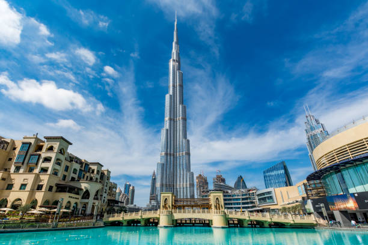
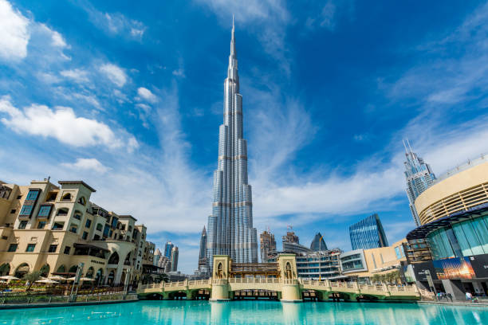
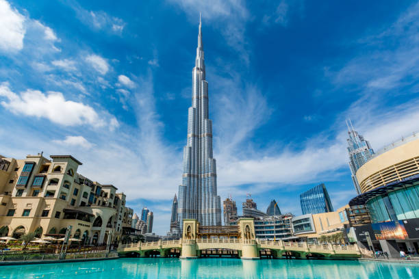
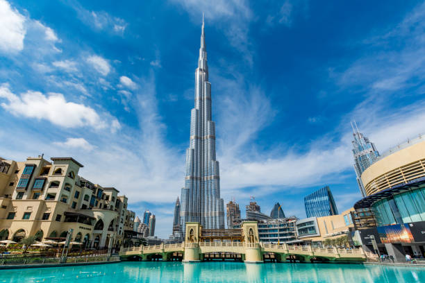

Burj Khalifa est un gratte-ciel situé à Dubaï aux Émirats arabes unis, devenu en mai 2008 la plus haute structure humaine jamais construite. Sa hauteur finale, atteinte le 17 janvier 2009, est de 828 mètres2. Elle forme le cœur d’un nouveau quartier : Downtown Dubai. L'inauguration et l'ouverture partielle ont eu lieu le 4 janvier 2010.
Burj Khalifa fait partie d'un vaste projet urbanistique, immobilier et architectural couvrant une superficie de 2 km2. Il s'agit de créer un nouveau quartier, Downtown Dubai, un peu au sud du centre historique de Dubaï aux Émirats arabes unis, et à côté du quartier côtier de Jumeirah, mais situé quelques kilomètres à l'intérieur des terres. Ce quartier doit comprendre, outre le gratte-ciel du même nom, un lac artificiel et de nombreux bâtiments de grandes dimensions. En tout, il prévoit un ensemble de 30 000 résidences, neuf hôtels dont The Address Downtown Burj Dubaï achevé en 2008, au moins 19 tours résidentielles, le plus grand centre commercial du monde, le Dubaï Mall qui y a ouvert ses portes en 2008, trois hectares de parcs et le lac artificiel de douze hectares (Lac de Burj Khalifa). Sur ce dernier, la fontaine de Dubaï offre un spectacle aquatique.
Source : Wikipedia